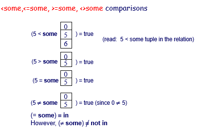
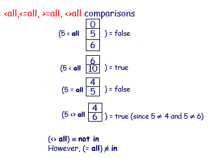
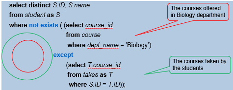
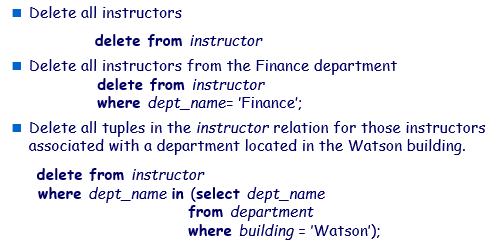
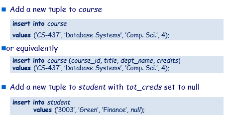
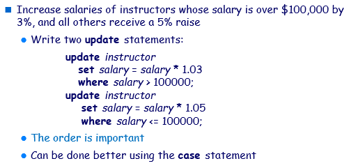
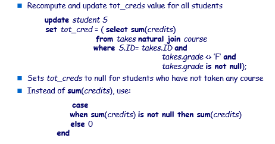

SQL｜子查询与DML
嵌套子查询
Nested Subqueries
- 子查询指的是在一个查询中嵌入一个select-from-where表达式
- 子查询通常用于：
- 判断一个元素是否属于一个集合
- 与集合中元素进行比较
- 判断集合是否为空集
集合成员资格
-
SQL 允许测试元组在关系中的成员资格
- 连接词 in 测试元组是否是集合中的成员
- 连接词 not in 测试元组是否不是集合中的成员
- 集合是由 select 子句产生的一组值构成
-
示例：查找2009年秋季和2010年春季开设的课程
1 | |
集合比较
- 嵌套子查询可以通过集合比较完成一些查询的条件的建立，这里的比较指的是与集合中的元素进行比较


空关系测试
- 嵌套子查询的应用还可以在条件判断时用测试集合是否为空的方法，用exist子句。
- 具体含义：
- 设r 是一关系
- exists r 为真表示 r 中有元素不是空集
- not exists r 表示 r 中没有元素，是空集。
- 设r 是一关系
- 当我们判断一个集合X是否另一个集合Y的子集时可以用X – Y 是否为空集来判断，即X – Y = Ø X Y
- 用 SQL 即为
not exists (X except Y)
- 用 SQL 即为

重复元组存在性测试
- 如果作为参数的子查询结果中没有重复的元组， unique 结构将返回 true 值
1 | |
with 子句
实际使用中要求 MySQL 版本在 8.0 以上
- With 子句提供了一种定义临时关系的方法，这个临时关系可以用于查询，但是只对包含with子句的查询有效
- 示例：查询请求是查找预算值最高的系
1 | |
- 其中 max_budget 是临时关系名，value 是这个关系的属性（只有一列属性），as 之后是一个查询，with 定义的临时关系的数据来自这个 select 查询结果
- with 子句定义的临时关系不能持久保存，只对包含 with 子句的查询有效，即接下来的 select 查询访问后就无效
标量子查询(Scalar Subquery)
-
SQL允许子查询出现在返回单个值的表达式可以出现的任何地方
- 只要子查询只返回包含单个记录属性的单个记录
- 简单说就是返回单一值的子查询
-
示例：列出所有系和所拥有的教师总数。教师总数是一个单个值
- 若这个查询返回的结果不止一个记录，系统报错！
1 | |
数据库的修改
删除
- Delete实现从一个数据集中删掉一些满足一定条件的记录
- 注意语法结构：
- delete from 表示从哪一个数据集中删除一些记录
- where条件表示满足删除记录的条件，用法和select语句一样
- 嵌套子查询同样可以在这里使用

- 删除记录时，如果遇到聚合计算，是否会出现循环删除?
- 计算平均薪水后找到满足条件的所有记录
- 删掉满足条件的记录
插入
- Insert 实现向数据库添加记录的操作

- 【注意】应用insert into语句实现数据入库操作时，插入的数据可能来自另一个数据集的查询结果，这时候select查询语句全部执行完成之后再进行insert操作
更新
- Update操作完成对数据记录某些属性值的修改
- 同样修改某个记录的某些属性值要在SQL中指明
- Update的关系名表明对哪一个数据集中的记录进行修改
- set是赋值语句，实施具体属性值的修改操作
- where子句表达满足条件的记录。

- 应用 update 时可以应用标量子查询

本博客所有文章除特别声明外，均采用 CC BY-SA 4.0 协议 ，转载请注明出处！